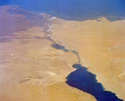
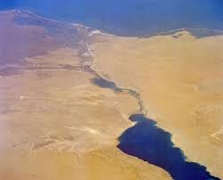

The opening of the canal created the first salt-water passage between the Mediterranean and the Red Sea. Although the Red Sea is about 1.2 m (4 ft) higher than the eastern Mediterranean,the current between the Mediterranean and the middle of the canal at the Bitter Lakes flows north in winter and south in summer. The current south of the Bitter Lakes is tidal, varying with the tide at Suez.
The Bitter Lakes, which were hypersaline natural lakes, blocked the migration of Red Sea species into the Mediterranean for many decades, but as the salinity of the lakes gradually equalised with that of the Red Sea the barrier to migration was removed, and plants and animals from the Red Sea have begun to colonise the eastern Mediterranean. The Red Sea is generally saltier and more nutrient-poor than the Atlantic, so the Red Sea species have advantages over Atlantic species in the less salty and nutrient-rich eastern Mediterranean. Accordingly, most Red Sea species invade the Mediterranean biota, and only few do the opposite.
Invasive species originated from the Red Sea and introduced into the Mediterranean by the canal have become a major component of the Mediterranean ecosystem and have serious impacts on the ecology, endangering many local and endemic species. About 300 species from the Red Sea have been identified in the Mediterranean, and there are probably others yet unidentified. The Egyptian government's intent to enlarge the canal has raised concerns from marine biologists, fearing that this will worsen the invasion of Red Sea species. Also impacting the eastern Mediterranean, starting in 1968, was the operation of Aswan High Dam across the Nile. While providing for increased human development, the project reduced the inflow of freshwater and ended all natural nutrient-rich silt entering the eastern Mediterranean at the Nile Delta. This provided less natural dilution of Mediterranean salinity and ended the higher levels of natural turbidity, additionally making conditions more like those in the Red Sea.
 
